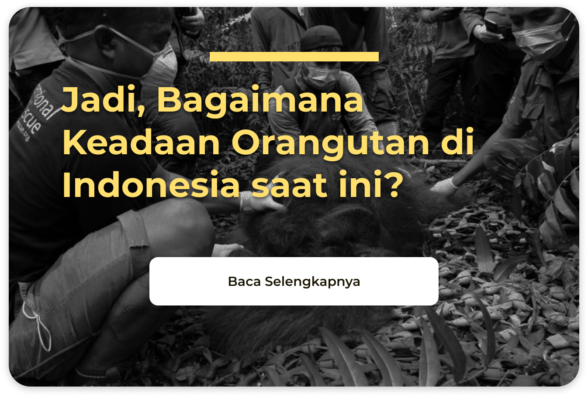

Sekilas tentang Orangutan
Orangutan adalah satu-satunya kera besar yang hidup di daratan Asia. Kerabat terdekat lainnya berasal dari Afrika, yaitu simpanse, gorilla, dan bonobo. Ada tiga jenis orangutan di Indonesia, yaitu orangutan sumatera (Pongo abelii), orangutan tapanuli (Pongo tapanuliensis), dan orangutan kalimantan (Pongo pygmaeus). Orangutan hidup di hutan tropis dan saat ini terancam punah. Sebagai spesies umbrella, orangutan membantu melindungi ekosistem hutan tropis di mana mereka tinggal dan juga spesies lain yang hidup di dalamnya. Dalam hal ini, orangutan menjadi "payung" atau "pelindung" bagi spesies lain dan lingkungan di sekitarnya.
Ada beberapa fakta unik mengenai orangutan, di antaranya:
- Orangutan dikenal sebagai primata yang sangat cerdas, mampu menggunakan alat untuk mendapatkan makanan dan belajar dari pengalaman.
- Berbeda dengan banyak primata lainnya, orangutan cenderung bersifat soliter, dengan jantan dewasa biasanya hidup sendiri dan betina merawat anak mereka hingga dewasa.
- Meskipun soliter, orangutan memiliki hubungan keluarga yang kuat, dengan betina yang mengajarkan anak-anak mereka keterampilan hidup penting.
Kepunahan Hewan Endemik Mempesona, Orangutan
Orangutan, dan banyak spesies lainnya kini menghadapi kepunahan. Terjadinya deforestasi membuat mereka tidak punya habitat yang aman lagi. Ketiga spesies orangutan, yaitu spesies yang berasal dari Kalimantan, Sumatra, dan Tapanuli kini sama-sama berstatus 'sangat terancam punah' oleh International Union for Conservation (IUCN) dalam Red Data List 2016. Sekarang, populasi orangutan Kalimantan diperkirakan tinggal 50.000 individu saja dengan perkiraan akan terus menurun setiap tahunnya. Berikut adalah tabel jenis orangutan dan jumlah populasinya.
Jenis Orangutan Populasi Perkiraan Status Orangutan Sumatera (Pongo abelii) 13.600 Sangat Terancam Punah Orangutan Tapanuli (Pongo tapanuliensis) 800 Sangat Terancam Punah Orangutan Kalimantan (Pongo pygmaeus) 50.000 Sangat Terancam Punah Kondisi Orangutan Sekarang
Orangutan, primata besar endemik Indonesia, kini hanya tersisa di Pulau Sumatera dan Kalimantan. Status konservasi orangutan Sumatera dan Kalimantan termasuk dalam kategori terancam kritis (critically endangered) menurut IUCN, yang berarti mereka menghadapi risiko kepunahan yang sangat tinggi di alam liar. Berdasarkan kajian Population and Habitat Viability Assessment (PHVA) tahun 2016, diperkirakan terdapat sekitar 57.350 orangutan di Borneo (Kalimantan). Namun, jumlah ini diprediksi telah menurun signifikan hingga tahun 2020. Di Sumatera, berdasarkan kajian PHVA tahun 2004, diperkirakan terdapat sekitar 14.470 orangutan, dan jumlah ini juga diprediksi telah berkurang. Faktor utama yang mengancam kelangsungan hidup orangutan adalah aktivitas manusia, termasuk deforestasi, kebakaran hutan dan lahan, perburuan dan penjualan ilegal, serta pembangunan yang merusak habitat alami mereka. Upaya konservasi telah dilakukan, termasuk perlindungan habitat di kawasan seperti Bentang Alam Wehea-Kelay di Kalimantan Timur. Namun, diperlukan kerjasama yang lebih intensif antara berbagai pihak untuk memastikan kelangsungan hidup orangutan di masa depan.
